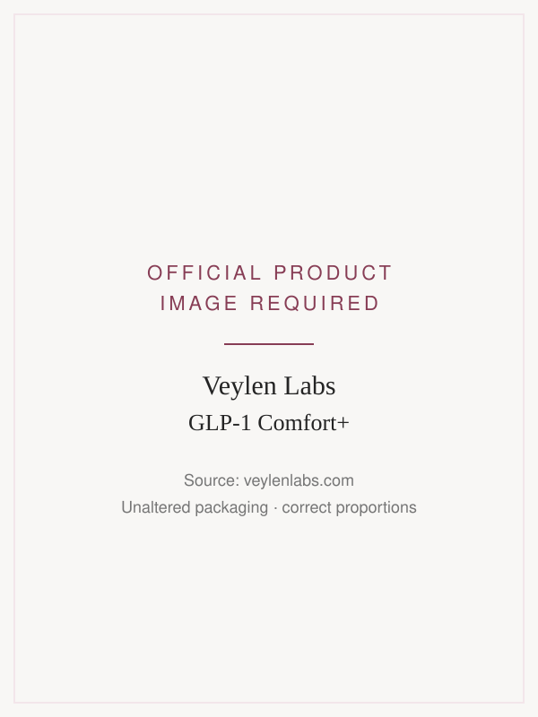
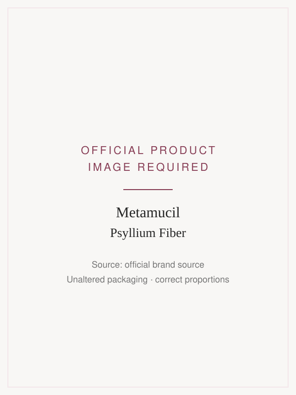
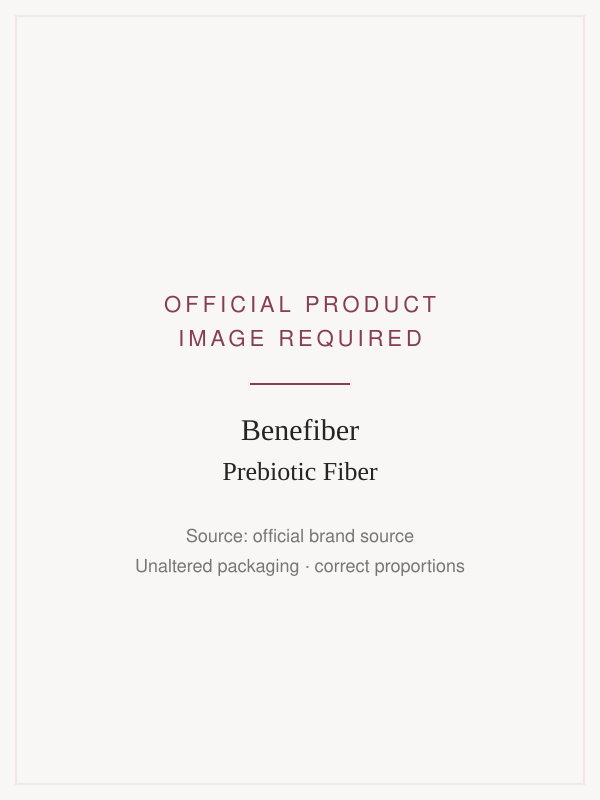
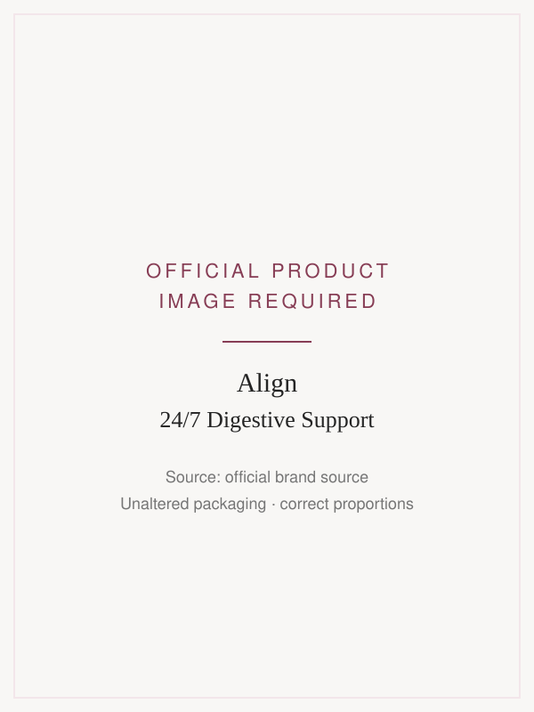
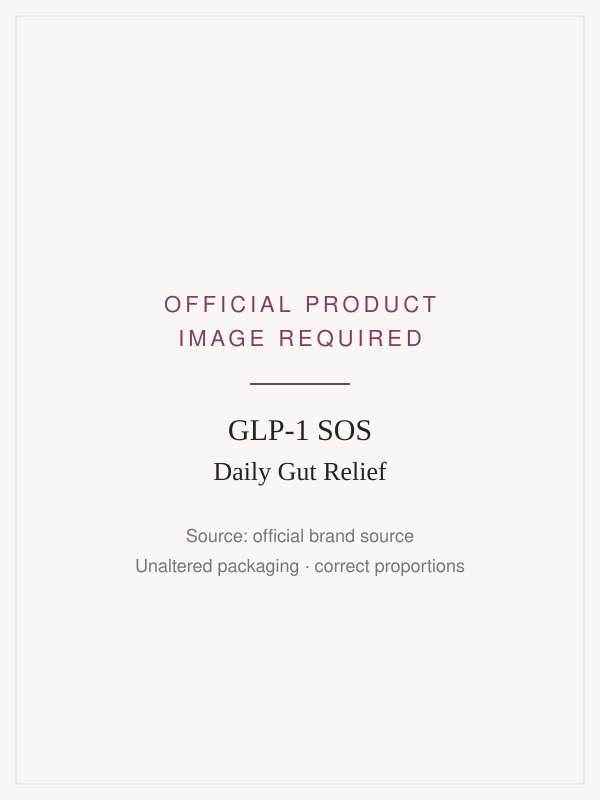

We Compared 5 Popular GLP-1 Gut Support Supplements — Here’s What Actually Addresses More Than Constipation
Constipation, bloating, an unsettled stomach, and afternoon fatigue can turn a promising GLP-1 journey
into a frustrating daily routine. We looked at five popular support options to understand how their
ingredients, formulations, and everyday convenience compare.
Placeholder — final image brief: natural woman aged 45–60, realistic American home, soft daylight,
no products, logos, or text overlays.
GLP-1 medications have changed the conversation around weight management. But for many people, the
experience includes more than reduced appetite.
Digestive changes can become part of everyday life. Constipation, nausea, bloating, and difficulty
maintaining normal eating routines are common concerns discussed by people using these medications.
That has created an expanding market of fiber supplements, probiotics, digestive aids, and
GLP-1-specific formulas.
But these products don’t all serve the same purpose.
Some focus on fiber intake. Others provide a probiotic. More specialized formulas combine ingredients
intended to support multiple aspects of digestive wellness.
We compared five options based on their ingredients, relevance to common GLP-1 concerns, convenience,
and available supporting evidence.
How We Ranked These GLP-1 Gut Support Supplements
Not every digestive supplement is designed for the same purpose. A fiber powder, a daily probiotic,
and a multi-ingredient GLP-1 support formula can have very different
ingredient profiles.
To make the comparison more useful, we evaluated each option across five important areas — from the
concerns it targets to the transparency of its ingredients and the convenience of taking it
consistently.
Full Side-Effect Cluster Coverage
Does the formula provide ingredients relevant to regularity, stomach comfort, bloating and gas,
and nutritional energy support — or is it designed to address only one concern?
Slowed-Gut Compatibility
How suitable is the ingredient profile for someone experiencing GLP-1-related
digestive slowdown? We considered fiber content, tolerability, and whether particular ingredients
may contribute to digestive discomfort in some users.
Dose Transparency & Relevance
Are the key ingredients and their quantities clearly disclosed? We examined ingredient forms,
stated dosages, and the available evidence supporting their intended uses.
Simplicity & Daily Convenience
Is the product easy to incorporate into a regular routine, or does it require multiple
supplements, powders, preparation steps, or complicated timing?
Customer Feedback & Evidence
What do available customer experiences suggest, and how reliable is the supporting evidence?
We distinguish between verified product feedback, ingredient research, and clinical studies of
finished formulations.
With those criteria in mind, here’s how the five options compare.
Our Top 5 GLP-1 Gut Support Supplements
From everyday fiber and probiotic products to formulas developed specifically for GLP-1 users,
here’s how the five options compare.
The order below is our editorial presentation order, not a numerical performance ranking.
We have not published scores for these products, because no scoring method has yet been
applied identically to all five. The evaluation is descriptive throughout.
Featured Pick

Veylen Labs GLP-1 Comfort+
Best Overall for Comprehensive GLP-1 Support
GLP-1 Comfort+ takes a broader approach to digestive wellness by combining magnesium, concentrated ginger extract, a defined probiotic strain, and B vitamins in one daily formula.
Rather than focusing exclusively on fiber intake or probiotic support, its ingredient profile is designed around several concerns commonly discussed by people taking GLP-1 medications.
Magnesium — 300 mg elemental, from magnesium oxide.
Ginger root extract — 500 mg, standardized to at least 5% gingerols.
Weizmannia coagulans BC99 — 2 billion CFU.
Vitamins B1, B6, and B12.
Two capsules daily.

Metamucil Psyllium Fiber
Best-Known Fiber Option
Metamucil is an established psyllium fiber supplement commonly used to support digestive regularity. Its approach focuses on soluble fiber rather than a combination of ingredients targeting multiple aspects of digestive wellness.
For people taking GLP-1 medications, suitability may depend on symptoms, fluid intake, and individual tolerance.
Psyllium-based fiber.
Powder preparation.
Primarily regularity-focused.
Not a multi-ingredient GLP-1 support formula.

Benefiber Prebiotic Fiber
Best for Easy Mixing
Benefiber provides soluble prebiotic fiber in a powder designed to dissolve easily in food and beverages.
Its primary role is fiber supplementation, making it a different type of product from formulas combining magnesium, ginger, probiotics, and vitamins.
Prebiotic soluble fiber.
Easy-mixing powder.
General digestive wellness positioning.
Not specifically formulated for multiple GLP-1-related concerns.

Align 24/7 Digestive Support
Best for Probiotic-Focused Support
Align focuses on daily probiotic support using a defined Bifidobacterium strain.
For someone primarily interested in probiotic supplementation, this is a more focused approach. However, the formula differs significantly from products that combine probiotics with magnesium, ginger, and vitamins.
Probiotic-focused formula.
Defined probiotic ingredient.
Simple daily routine.
Not designed as a complete multi-ingredient GLP-1 support formula.

GLP-1 SOS Daily Gut Relief
Best Alternative GLP-1-Specific Formula
GLP-1 SOS is a closer category comparison because its formula is also positioned around the needs of GLP-1 users.
According to the comparison brief, it combines magnesium, ginger, probiotics, vitamins, and additional ingredients. This makes ingredient quantities, ingredient forms, and formulation focus especially important comparison points.
Reported formulation — per comparison brief, pending label verification
Approximately 250 mg magnesium.
200 mg ginger.
Multi-strain probiotic blend.
B vitamins.
Additional ingredients such as peppermint, iron, and ashwagandha.
Editor’s Featured Pick
#1 Veylen Labs GLP-1 Comfort+
Best Overall for Comprehensive GLP-1 Support
Anyone taking a GLP-1 knows the routine can involve more than changes in appetite.
There’s the bathroom schedule that suddenly feels unpredictable. The uncomfortable fullness after
meals. The bloating that makes your clothes feel tighter by evening. And the challenge of keeping
your nutritional routine consistent when you’re eating less.
Most supplement options focus on just one piece of that picture.
Veylen Labs GLP-1 Comfort+ approaches daily digestive wellness differently, combining magnesium,
ginger, a defined probiotic strain, and B vitamins in one convenient formula.
Four complementary ingredient categories. One simple daily routine.
Why the Formula Stands Out
Instead of relying on a single ingredient, Comfort+ combines four familiar nutritional approaches,
each serving a different role in a daily wellness routine.
Magnesium: Regularity Support
300 mg elemental magnesium from magnesium oxide.
Magnesium oxide can have an osmotic effect in the digestive tract, drawing water into the bowel. This is one reason magnesium-containing products are commonly used in approaches to occasional constipation.
Comfort+ includes 300 mg of elemental magnesium as part of its regularity-focused ingredient profile.
Ginger: Stomach Comfort
500 mg ginger root extract, standardized to at least 5% gingerols.
Ginger has a long history of use for digestive comfort and has been studied in several nausea-related contexts.
Comfort+ includes a concentrated ginger extract as part of its approach to supporting stomach comfort, particularly relevant to people looking for alternatives to single-purpose digestive supplements.
BC99 Probiotic: Gut Balance
2 billion CFU of Weizmannia coagulans BC99.
Probiotic effects depend on the strain, formulation, and outcome being studied.
Rather than using an unspecified probiotic blend, Comfort+ identifies its BC99 strain and declared CFU quantity, making the ingredient profile easier to evaluate.
B Vitamins: Energy Metabolism
Vitamins B1, B6, and B12.
B vitamins contribute to normal energy metabolism and several essential bodily functions.
Their inclusion adds a nutritional dimension to Comfort+, complementing its digestive-focused ingredients.
Why a Multi-Ingredient Approach Matters
Think about the typical supplement cabinet.
A fiber powder for regularity. A probiotic for gut balance. Ginger taken separately for stomach
comfort. Maybe another supplement to support nutrition.
Each product has its own purpose. But managing several different routines isn’t always convenient.
Comfort+ brings together four complementary ingredient categories in two daily capsules, offering a
more streamlined approach for people who want broader nutritional and digestive support.
Multiple Separate Products
Fiber or regularity supplement.
Separate probiotic.
Ginger supplement.
B-vitamin supplement.
Several products to manage.
Veylen Comfort+
Magnesium.
Standardized ginger.
Defined BC99 probiotic.
Targeted B vitamins.
Two capsules daily.
A difference in formulation breadth and daily convenience — not a claim that these products are
therapeutically equivalent.
How Comfort+ Scored
Numerical scores are withheld until every category has a documented definition that is applied
identically to all five products. The evaluation below is qualitative.
Formula breadth
Four complementary ingredient categories.
Label transparency
Key ingredient identities and quantities disclosed.
Daily convenience
Two capsules.
Fiber content
No added fiber.
Product evidence
Ingredient-level research; finished-product evidence to be confirmed.
What We Like — And What to Consider
What We Like
Combines four complementary ingredient categories.
Includes declared quantities of magnesium and ginger.
Identifies the BC99 probiotic strain.
No added fiber.
Convenient two-capsule daily routine.
30-day money-back guarantee, subject to published terms.
What to Consider
Available primarily through the official website.
May not be suitable for everyone, especially those with certain health conditions or medication considerations.
Individual responses to supplements vary.
Does not replace medical care for persistent or severe gastrointestinal symptoms.
Our Verdict: Why Comfort+ Is the Featured Pick
What makes Veylen Labs Comfort+ interesting isn’t a single miracle ingredient.
It’s the combination.
Magnesium for a regularity-focused approach. Concentrated ginger for digestive comfort. A defined
probiotic strain for gut balance. And B vitamins to support normal energy metabolism.
The formula is designed around several everyday wellness considerations rather than one isolated
category.
For readers interested in a convenient, multi-ingredient supplement to discuss with their healthcare
professional while using GLP-1 medication, Comfort+ deserves a closer look.
The advantage is the combination — not a promise of overnight results.
Promotional link. Her Wellness Daily has a commercial relationship with Veylen Labs.
#2 Metamucil Psyllium Fiber
Best-Known Fiber Option
Metamucil is one of the most recognizable names in digestive wellness, and for good reason.
Its psyllium-based formula provides soluble fiber that absorbs water and forms a gel-like consistency in the digestive tract. Psyllium is commonly used to support bowel regularity.
For someone whose main objective is increasing dietary fiber intake, Metamucil is a familiar and widely available option.
But GLP-1 users may have concerns that extend beyond regularity alone.
Feeling overly full after small meals, occasional nausea, bloating, and challenges maintaining a consistent nutritional routine aren’t all addressed by a fiber-only formula.
That’s where the difference between a single-purpose supplement and a broader multi-ingredient approach becomes important.
A useful fiber supplement isn’t necessarily a complete GLP-1 support routine.
How Metamucil Supports Regularity
The primary ingredient in the Metamucil fiber product evaluated here is psyllium husk.
Psyllium is a bulk-forming soluble fiber. When taken with adequate liquid, it absorbs water and helps form stool that is easier to pass.
Its established use as a fiber supplement makes it relevant to people seeking regularity support.
However, its mechanism is different from ingredients such as magnesium, ginger, or probiotics, and individual tolerance can vary.
Key Product Characteristics
Primary ingredient
Psyllium husk.
Main purpose
Fiber supplementation and regularity support.
Daily format
Powder mixed with adequate liquid, for the powder product being reviewed.
GLP-1-specific formulation
Not specifically developed as a multi-ingredient GLP-1 wellness formula.
Where Metamucil Falls Short in This Comparison
The biggest limitation isn’t that Metamucil is a poor fiber supplement.
It’s that fiber is its main focus.
Our comparison considers several distinct concerns commonly discussed by GLP-1 users, including regularity, stomach comfort, bloating, and nutritional support.
Metamucil is relevant to the first category, but its fiber-focused ingredient profile does not provide the same combination of magnesium, ginger, a defined probiotic strain, and B vitamins found in comprehensive multi-ingredient formulas.
That doesn’t mean everyone needs a multi-ingredient supplement. For people specifically looking to increase fiber intake, a simpler product may be appropriate.
But for readers prioritizing formulation breadth and daily convenience, the comparison changes.
Metamucil addresses a narrower nutritional purpose — and that distinction matters when comparing formulas.
Metamucil: Pros & Cons
Pros
Well-established fiber supplement brand.
Psyllium is a well-studied soluble fiber.
Supports regularity when used appropriately.
Widely available online and in physical retail stores.
Suitable for people specifically looking to supplement fiber intake.
Cons
Primarily focused on fiber supplementation.
Does not combine magnesium, ginger, probiotics, and B vitamins.
Powder preparation requires adequate liquid.
May cause bloating or gas in some users.
Not specifically positioned as a comprehensive GLP-1 support formula.
Our Verdict on Metamucil
Metamucil remains a recognizable and practical option for people seeking additional soluble fiber.
Its primary strength is also its limitation in this comparison: it focuses on fiber.
For GLP-1 users looking specifically for a fiber supplement, it may be worth discussing with a healthcare professional.
For readers who want one formula combining multiple nutritional and digestive support ingredients, Metamucil serves a different purpose from products such as Veylen Labs Comfort+.
A solid fiber option — but not a comprehensive multi-ingredient GLP-1 support formula.
#3 Benefiber Prebiotic Fiber
Best for Easy Mixing
Benefiber has become a familiar option for people who want to add soluble fiber to their daily routine without the hassle of a thick or strongly flavored drink.
Its original powder formula uses wheat dextrin, a soluble prebiotic fiber that mixes easily into beverages and soft foods.
That convenience is its biggest advantage.
But when comparing supplements for people taking GLP-1 medications, convenience alone doesn’t tell the whole story.
Many users are looking for more than additional fiber. They may also be considering stomach comfort, bloating, and the nutritional challenges of eating smaller meals.
Benefiber is primarily designed for fiber supplementation rather than addressing those different needs through multiple complementary ingredients.
Easy to mix. Easy to use. But focused on fiber rather than the full range of GLP-1 wellness concerns.
How Benefiber Supports Digestive Wellness
Benefiber’s wheat dextrin is a soluble fiber that can contribute to daily fiber intake and support normal digestive function.
It also has prebiotic properties, meaning it can be utilized by certain microorganisms in the gut.
That makes Benefiber different from a typical multi-ingredient supplement containing ingredients such as ginger, magnesium, probiotics, and vitamins.
Its purpose is straightforward: provide additional soluble fiber in a convenient format.
For someone whose primary goal is increasing fiber intake, that simplicity may be a benefit.
Key Product Characteristics
Primary Ingredient
Wheat dextrin soluble fiber, for the original powder formulation.
Primary Purpose
Daily fiber supplementation and digestive wellness support.
Product Format
Easy-mixing powder for beverages and soft foods.
GLP-1-Specific Formulation
Not designed as a comprehensive multi-ingredient GLP-1 support supplement.
Where Benefiber Falls Short in This Comparison
Benefiber’s advantage is its simplicity.
It gives users a straightforward way to increase their soluble fiber intake without managing a complex supplement routine.
But that also defines its limitations in a comparison focused on several GLP-1-related wellness concerns.
A fiber-only supplement does not provide the same ingredient categories as a formula combining magnesium, standardized ginger, a defined probiotic strain, and B vitamins.
Benefiber may fit into a broader wellness routine, but it isn’t intended to serve every nutritional or digestive purpose on its own.
For readers who want a convenient, multi-ingredient supplement rather than an individual fiber product, that difference is worth considering.
Benefiber can be useful for fiber intake — but fiber alone isn’t the same as a multi-ingredient support formula.
Benefiber: Pros & Cons
Pros
Simple, familiar fiber supplement.
Easy to mix into drinks or soft foods.
Contains soluble prebiotic fiber.
Convenient for increasing daily fiber intake.
Widely available through retail channels.
Cons
Primarily focused on fiber supplementation.
Does not include ginger or magnesium as core digestive-support ingredients.
Does not provide the same defined probiotic-plus-vitamin combination as Comfort+.
Additional fiber can cause gas or bloating in some individuals.
Not specifically formulated around multiple GLP-1 wellness concerns.
Our Verdict on Benefiber
Benefiber is a practical option for people who want an easy way to increase soluble fiber intake.
Its dissolvable powder format and prebiotic properties make it relevant for general digestive wellness.
However, in a comparison focused on broader GLP-1 support, its formulation has a narrower purpose.
For people interested in combining several complementary nutritional ingredients in one daily routine, products such as Veylen Labs Comfort+ offer a different approach.
A convenient prebiotic fiber option — but not an all-in-one GLP-1 wellness formula.
#4 Align 24/7 Digestive Support
Best for Probiotic-Focused Support
Align is one of the more recognizable names in probiotic digestive support.
Unlike fiber supplements that focus on adding soluble fiber to the diet, Align takes a different approach: introducing a specific probiotic strain as part of a daily digestive wellness routine.
That makes Align an option worth considering for people whose main priority is probiotic supplementation.
But for women navigating GLP-1 medications, digestive concerns may extend beyond gut microbiome support.
Constipation, occasional nausea, bloating, and challenges maintaining adequate nutrition involve different considerations.
A probiotic-focused formula may contribute to one part of a wellness routine, but it doesn’t contain the broader combination of magnesium, ginger, probiotics, and B vitamins found in a multi-ingredient formula such as Comfort+.
A targeted probiotic approach — rather than a comprehensive multi-ingredient GLP-1 support formula.
How Align Supports Digestive Wellness
Align 24/7 Digestive Support is formulated around a specific Bifidobacterium probiotic strain.
Probiotics are live microorganisms that, when administered in adequate amounts, may confer health benefits. However, their effects depend on the specific strain, the studied outcomes, and the population using them.
Align’s focused formula makes it distinct from products that combine probiotics with other nutritional ingredients.
For readers interested primarily in probiotic supplementation, a single-strain approach can be appealing because it is straightforward and easier to evaluate.
At the same time, evidence supporting one probiotic strain should not be assumed to apply to other strains or to every digestive concern.
Key Product Characteristics
Primary Ingredient
A defined Bifidobacterium probiotic strain.
Primary Purpose
Daily probiotic digestive support.
Product Format
Convenient daily capsule, for the formulation under review.
GLP-1-Specific Formulation
Not specifically marketed as a comprehensive multi-ingredient GLP-1 support system.
Where Align Falls Short in This Comparison
Align’s greatest strength is its focus.
It provides a recognizable probiotic formulation for people looking to support their digestive wellness.
But our comparison considers several ingredient categories relevant to the everyday concerns discussed by GLP-1 users.
Align does not combine its probiotic with magnesium, concentrated ginger, and B vitamins in the same way as broader multi-ingredient formulas.
That means consumers looking for those additional ingredients would need to consider separate products or a different formulation.
This doesn’t make Align a poor probiotic. It simply serves a narrower purpose.
For people seeking probiotic supplementation alone, that simplicity may be exactly what they want. For those prioritizing formula breadth and fewer separate supplements, a combined approach may be more convenient.
Align offers focused probiotic support, but its ingredient profile addresses a narrower set of nutritional purposes.
Align: Pros & Cons
Pros
Established probiotic supplement brand.
Uses a defined probiotic strain.
Convenient daily capsule format.
Straightforward probiotic-focused formulation.
Widely available online and in retail stores.
Cons
Primarily focused on probiotic supplementation.
Does not contain magnesium as a core ingredient for regularity-focused support.
Does not include concentrated ginger for stomach-comfort positioning.
Does not combine its probiotic with the B-vitamin profile used by Comfort+.
Not specifically designed as an all-in-one GLP-1 support formula.
Our Verdict on Align
Align remains a practical option for readers specifically interested in a daily probiotic.
Its focused formula is easy to understand, and its defined probiotic strain makes it distinguishable from products relying on less clearly described probiotic blends.
However, its narrower formulation also explains its position in a comparison centered on multiple GLP-1 wellness concerns.
For readers seeking a combined supplement with magnesium, ginger, a defined probiotic, and B vitamins, Veylen Labs Comfort+ offers a broader ingredient profile.
The right choice ultimately depends on whether someone wants a focused probiotic or a multi-ingredient daily supplement.
A recognizable probiotic option — but not a complete multi-ingredient GLP-1 wellness formula.
#5GLP-1 SOS Daily Gut Relief
Best Alternative GLP-1-Specific Formula
GLP-1 SOS Daily Gut Relief is one of the more directly comparable products in our review.
Unlike general fiber powders or standalone probiotics, it was developed and marketed specifically around the digestive and nutritional concerns of people using GLP-1 medications.
Its formula combines magnesium, ginger, probiotics, B vitamins, and several additional ingredients in a two-capsule daily serving.
That makes it a legitimate alternative worth examining closely.
But while both GLP-1 SOS and Veylen Comfort+ take a multi-ingredient approach, their formulations are not identical.
The most notable differences appear in their magnesium sources, ginger quantities, probiotic formulations, and the number of additional ingredients.
Both are designed for GLP-1 users. The difference is what goes into each daily serving.
What’s Inside GLP-1 SOS?
The figures below come from the product’s published ingredients page, last updated 15 September 2026.
Magnesium
250 mg magnesium, from citrate and oxide.
GLP-1 SOS includes 250 mg of magnesium from a combination of citrate and oxide forms. Magnesium-containing products are used in certain approaches to occasional constipation, although effects depend on the form, amount, and individual circumstances.
Ginger
200 mg ginger root extract, standardized to 5% gingerols.
Ginger is included for its digestive-comfort positioning. GLP-1 SOS provides a standardized extract, making the stated gingerol concentration available for comparison.
Probiotic Blend
19-strain probiotic blend, 50 mg according to the published ingredient list.
GLP-1 SOS uses a multi-strain probiotic approach rather than highlighting one strain as the primary focus. Its ingredients page describes the blend by weight and concentration, but these figures alone should not be presented as a verified total CFU count per serving.
Vitamins and Minerals
Vitamin B12 500 mcg · Vitamin B6 10 mg · Iron 9 mg · Vitamin D 50 mcg · Zinc 10 mg · Folate 400 mcg DFE · Biotin 2,500 mcg.
The formula includes several vitamins and minerals associated with normal nutritional functions, including energy metabolism. Its broader micronutrient profile may appeal to consumers seeking multiple nutritional ingredients in one product.
These additional ingredients expand the formula beyond magnesium, ginger, probiotics, and B vitamins.
Whether this broader approach is preferable depends on individual nutritional needs, ingredient tolerance, and the evidence supporting each component.
GLP-1 SOS vs. Veylen Comfort+: What’s Different?
Scroll the table sideways to compare →
Ingredient and policy comparison between Veylen Labs GLP-1 Comfort+ and GLP-1 SOS Daily Gut Relief.
Feature
Veylen Comfort+
GLP-1 SOS
GLP-1-focused positioning
Yes
Yes
Magnesium
300 mg elemental
250 mg
Magnesium source
Oxide
Citrate + oxide
Ginger extract
500 mg
200 mg
Ginger standardization
At least 5% gingerols
5% gingerols
Probiotic
BC99, 2 billion CFU
19-strain blend, 50 mg
Vitamin B12
50 mcg
500 mcg
Iron
Not listed in supplied Veylen formula
9 mg
Ashwagandha
Not listed in supplied Veylen formula
50 mg
Peppermint
Not listed in supplied Veylen formula
50 mg
Added bulk-forming fiber
No
No
Daily capsules
2
2
Money-back guarantee
30 days, eligibility conditions apply
60 days, published terms apply
Quantities are compared as declared on each product’s published label. Different magnesium forms,
extract quantities, and probiotic formats are not directly interchangeable, and a larger declared
amount is not by itself evidence of a better outcome. Probiotic figures are reported in each
product’s own units and are not equivalent measures.
More Ingredients — Or a More Focused Formula?
At first glance, the choice seems straightforward: one formula includes more ingredients, while the other concentrates on fewer nutritional categories.
But more ingredients don’t automatically mean better results.
GLP-1 SOS includes a wider selection of vitamins, minerals, botanicals, and digestive enzymes.
Veylen Comfort+ takes a more concentrated approach, built around magnesium, standardized ginger, a defined probiotic strain, and B vitamins.
For someone who prefers a broader nutritional formula, GLP-1 SOS may be appealing.
For someone specifically looking for a streamlined ingredient profile without additional iron, ashwagandha, or peppermint, Comfort+ may be the more appealing option.
The decision comes down to formulation preferences, ingredient suitability, and the evidence available for each product.
The question isn’t simply how many ingredients are inside. It’s whether those ingredients make sense for your needs.
Key Differences Explained
Magnesium Form and Quantity
Comfort+ lists 300 mg elemental magnesium from magnesium oxide, compared with 250 mg magnesium from citrate and oxide in GLP-1 SOS.
The numbers differ, but magnesium form and individual tolerance also matter. A higher listed quantity is not by itself evidence of superior symptom relief.
Standardized Ginger
Comfort+ lists 500 mg ginger extract standardized to at least 5% gingerols, compared with 200 mg standardized to 5% gingerols in GLP-1 SOS.
Comfort+ therefore provides a larger stated quantity of standardized ginger extract per serving. Whether this translates into a meaningful difference for GLP-1 users has not been established by a direct clinical comparison.
Probiotic Strategy
Comfort+ identifies the BC99 probiotic strain and states 2 billion CFU.
GLP-1 SOS uses a 19-strain probiotic blend, listed as 50 mg on its ingredients page.
These formulations cannot be ranked by strain count alone. Probiotic research is strain-specific, and a transparent CFU count can make the formulation easier to interpret.
GLP-1 SOS: Pros & Cons
Pros
Specifically positioned for GLP-1 users.
Combines multiple digestive and nutritional ingredients.
Includes magnesium and standardized ginger.
No added bulk-forming fiber.
Convenient two-capsule daily routine.
Includes additional vitamins, minerals, and botanicals.
Advertises a 60-day money-back guarantee.
Cons
Contains more ingredient categories, which may not suit consumers seeking a simpler formula.
Lower declared ginger-extract quantity than Comfort+.
Lower declared total magnesium quantity than Comfort+, with different magnesium forms.
Public ingredient listing does not provide a directly comparable total probiotic CFU per serving.
Contains supplemental iron, which may be unnecessary for people without a relevant nutritional need.
Contains ashwagandha, which requires additional consideration for some medical conditions and medications.
Our Verdict on GLP-1 SOS
GLP-1 SOS is a genuine alternative in the GLP-1 supplement category.
Its formula is considerably broader than a basic fiber product or standalone probiotic, and it includes several ingredients also found in Veylen Comfort+.
The main distinction is formulation philosophy.
GLP-1 SOS combines a wider range of vitamins, minerals, botanicals, and digestive ingredients.
Comfort+ focuses more narrowly on magnesium, standardized ginger, a specific probiotic strain, and B vitamins.
Both approaches have potential advantages and considerations.
For readers who prefer a more focused formula and clearly identified probiotic CFU quantity, Comfort+ offers an appealing alternative. For those who want a wider micronutrient profile, GLP-1 SOS may deserve consideration.
Two serious GLP-1-focused options — with meaningfully different ingredient profiles.
Why Veylen Comfort+ Took Our #1 Spot
After reviewing all five products, one distinction became especially clear.
Not every supplement in the digestive wellness category is designed to do the same job.
Metamucil and Benefiber focus primarily on fiber supplementation.
Align takes a probiotic-focused approach.
GLP-1 SOS combines a broader collection of digestive and nutritional ingredients.
Veylen Labs Comfort+ stands out for a different reason: it brings together four clearly defined ingredient categories in one streamlined daily formula.
Magnesium. Standardized ginger. A named probiotic strain. And B vitamins.
Instead of requiring consumers to assemble several individual supplements, Comfort+ packages these ingredients into a convenient two-capsule routine.
The distinction isn’t simply more ingredients. It’s a focused combination designed around several complementary nutritional purposes.
Four Reasons Comfort+ Earned Our Featured Recommendation
Broader Than a Single-Purpose Supplement
Fiber powders and standalone probiotics can serve useful roles, but their formulations are focused on specific nutritional purposes.
Comfort+ combines magnesium, ginger, a probiotic, and B vitamins, offering a broader ingredient profile for readers interested in several digestive and nutritional support categories.
Transparent Core Ingredient Quantities
Comfort+ identifies its principal ingredient quantities, including 300 mg elemental magnesium, 500 mg standardized ginger extract, and 2 billion CFU of BC99.
Clearly disclosed information makes it easier for consumers and healthcare professionals to assess the formula.
A Focused Formula Without Added Fiber
Some consumers prefer fiber supplementation, while others are looking for a formula that does not add extra dietary fiber.
Comfort+ offers a different formulation approach by combining its selected ingredients without added fiber.
This is a product-design distinction, not evidence that fiber is unsuitable for everyone using GLP-1 medications.
Convenient Two-Capsule Routine
Daily convenience matters when maintaining a consistent supplement routine.
Comfort+ combines its selected ingredients into two capsules per day, eliminating the need to purchase those four categories as separate supplements.
For consumers prioritizing simplicity, this may be a meaningful practical advantage.
The Bottom Line: Five Products, Different Purposes
ProductPrimary approachMost relevant for
Veylen Comfort+
Primary approachMulti-ingredient formula combining magnesium, ginger, BC99 probiotic, and B vitamins.
Most relevant forReaders seeking a focused combination of digestive and nutritional support ingredients.
Metamucil
Primary approachPsyllium fiber supplementation.
Most relevant forReaders seeking additional soluble fiber for regularity.
Benefiber
Primary approachWheat dextrin prebiotic fiber.
Most relevant forReaders prioritizing convenient daily fiber supplementation.
Align
Primary approachDefined probiotic strain.
Most relevant forReaders primarily interested in probiotic-focused digestive support.
Most relevant forReaders interested in a wider variety of vitamins, minerals, botanicals, and digestive ingredients.
Our Final Verdict
For readers who simply want to increase fiber intake, products like Metamucil or Benefiber may serve that specific purpose.
For those who want a standalone probiotic, Align offers a more focused approach.
And for people interested in a particularly broad combination of vitamins, minerals, and digestive ingredients, GLP-1 SOS provides another GLP-1-specific option.
Veylen Labs Comfort+ is our featured choice for readers who prefer a more streamlined multi-ingredient formula.
Its combination of magnesium, standardized ginger, a defined probiotic strain, and B vitamins distinguishes it from the fiber-only and probiotic-only options in this comparison.
The decision remains personal, particularly for people taking prescription GLP-1 medications, whose digestive symptoms and nutritional needs may require individualized professional advice.
For a focused, convenient, multi-ingredient approach, Comfort+ is our featured pick.
Her Wellness Daily Featured Pick
Veylen Labs GLP-1 Comfort+
Magnesium, standardized ginger, a defined BC99 probiotic strain, and B vitamins.
Two capsules daily.
30-day money-back guarantee, subject to published eligibility requirements.
Interested in Taking a Closer Look at Comfort+?
You can explore the complete ingredient information, current purchasing options, and applicable
guarantee terms directly through Veylen Labs.
Promotional link. Her Wellness Daily has a commercial relationship with Veylen Labs.
Special Offer from Veylen Labs
Ready to Make Your GLP-1 Support Routine Simpler?
Get 3 Bottles of Veylen Comfort+ for the Price of 2
One daily formula combining magnesium, standardized ginger, a defined probiotic strain, and B
vitamins — without managing a separate supplement for every part of your routine.
Veylen’s Buy 2 Get 1 Free bundle gives you three bottles, with 30 daily servings in each bottle.
Buy 2 Get 1 Free
3 Bottles • 90-Day Supply • 180 Capsules
Current pricing and purchasing options are shown on the official Veylen Labs product page.
What’s Included in the Bundle?
3 Bottles of GLP-1 Comfort+
A 90-day supply containing 180 capsules total.
Four Core Ingredient Categories
Magnesium, standardized ginger extract, a defined probiotic strain, and B vitamins.
Convenient Daily Routine
Two capsules per day, following the instructions on the product label.
30-Day Money-Back Guarantee
Available on eligible first-time purchases, subject to Veylen Labs’ published refund conditions.
Your First Order Is Backed by a 30-Day Guarantee
Trying a new supplement is a personal decision.
Veylen Labs offers a 30-day money-back guarantee for eligible first-time purchases, giving you an opportunity to evaluate whether Comfort+ belongs in your daily routine.
If you’re not satisfied, you can request a refund within 30 days of delivery, subject to the published return requirements.
The guarantee applies to eligible first-time purchases of the product.
Refund requests must be made within 30 days of delivery.
At least one empty bottle must be returned.
Additional unused bottles from a multi-bottle order must be returned unopened.
Return shipping is generally the customer’s responsibility.
Shipping and optional service fees are non-refundable.
Subsequent subscription renewal orders are not covered by the first-purchase guarantee.
Checkout, guarantee and shipping terms are those published by Veylen Labs at the destination.
A Simpler Daily Routine Starts Here
Every product in our comparison serves a different purpose.
Some focus on fiber. Others focus on probiotics or broader nutritional coverage.
Veylen Comfort+ stands out for bringing four complementary ingredient categories together in one daily formula.
If that focused approach fits what you’re looking for, the current three-bottle offer is a practical way to explore the product over a longer routine.
Her Wellness Daily has a commercial relationship with Veylen Labs and may benefit from purchases
made through these links.
Frequently Asked Questions
Still have questions about GLP-1 gut support supplements? Here are some important things to
understand before choosing a product for your routine.
Why do GLP-1 medications cause digestive side effects?
GLP-1 medications influence appetite and gastrointestinal function, including how quickly food leaves the stomach.
Because of these effects, some people experience nausea, constipation, bloating, or feelings of fullness.
The type and severity of symptoms vary between individuals. Persistent or severe symptoms should be discussed with a healthcare professional.
Are fiber supplements helpful for people taking GLP-1 medications?
Fiber supplements may help some people maintain regularity, especially when dietary fiber intake is low.
However, fiber needs, fluid intake, digestive symptoms, and individual tolerance all matter.
Adding fiber too quickly can contribute to gas or bloating in some individuals.
Fiber supplements are not universally unsuitable for GLP-1 users, but persistent constipation requires individualized guidance.
What’s the difference between Veylen Comfort+ and a regular probiotic?
Standalone probiotic supplements generally focus on providing one or more probiotic strains.
Veylen Comfort+ combines a defined probiotic strain with magnesium, standardized ginger extract, and B vitamins.
This creates a broader ingredient profile, although combining multiple ingredients does not automatically establish greater clinical effectiveness.
Can I take Comfort+ with Ozempic, Wegovy, or Mounjaro?
Comfort+ is marketed for people using GLP-1 medications, including semaglutide- and tirzepatide-based treatments.
However, being marketed for GLP-1 users does not establish that the supplement is suitable for everyone or that interactions are impossible.
Consult your prescribing healthcare professional or pharmacist before combining Comfort+ with your medication, particularly if you have kidney problems, take additional magnesium, or use other medications or supplements.
How long does Comfort+ take to work?
Individual experiences vary, and there is no established clinical timeline for the finished Comfort+ formula.
Different ingredients serve different nutritional purposes, and supplement responses may depend on diet, existing symptoms, medication use, and individual health factors.
Follow the product instructions and seek medical advice rather than continuing to self-treat persistent or worsening digestive symptoms.
Does Comfort+ replace my GLP-1 medication?
No.
Comfort+ is a dietary supplement, not a prescription GLP-1 medication.
It is not intended to replace medications prescribed for weight management or diabetes.
Never discontinue or change a prescription treatment without discussing it with your healthcare professional.
Does Comfort+ contain fiber?
According to the product formula described in this comparison, Comfort+ does not contain added fiber.
Instead, it combines magnesium, standardized ginger, a defined probiotic strain, and B vitamins.
Verify the current Supplement Facts label before purchasing, as product formulations can change.
How do I take Veylen Comfort+?
The product information supplied for this comparison specifies two capsules daily.
Follow the instructions on the specific product packaging and consult a healthcare professional if you are unsure whether the ingredients are appropriate for you.
Do not exceed the recommended serving.
What does the 30-day money-back guarantee cover?
Veylen Labs offers a 30-day money-back guarantee for eligible first-time product purchases, beginning on the delivery date.
Eligibility, any required returns, shipping expenses, and exclusions are governed by the company’s published refund policy.
For a multi-bottle purchase, the company may require unopened units to be returned.
The purchase type depends on the specific offer selected at checkout.
Before completing an order, check whether the displayed price applies to a one-time purchase or a recurring subscription.
For subscriptions, review the renewal frequency, recurring price, cancellation requirements, and refund eligibility.
The checkout must clearly disclose any recurring payment commitment.
Important Information
Her Wellness Daily publishes wellness-related educational and product-comparison content.
The information in this article is for general informational purposes and is not intended as medical advice, diagnosis, or treatment.
Dietary supplements are not substitutes for prescribed medications or professional medical care.
People using GLP-1 medications should consult their healthcare professional before starting new supplements, especially when managing ongoing digestive symptoms, medical conditions, or multiple medications.
Individual experiences vary. Ingredient research does not necessarily demonstrate the effectiveness of a finished supplement.
Advertising & Affiliate Disclosure
Her Wellness Daily has a commercial relationship with Veylen Labs, the manufacturer of Comfort+.
We may receive compensation from purchases made through links in this article.
Our featured product selection reflects the formulation criteria described in this comparison and should not be interpreted as evidence of independent clinical superiority.
Product descriptions, prices, and availability may change. Readers should verify current details on the manufacturer’s website.